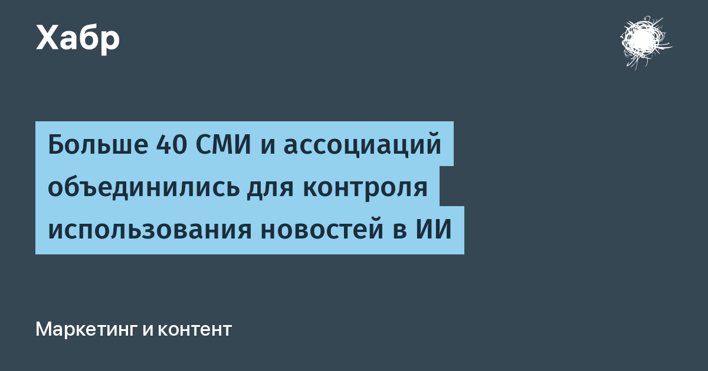

На этой неделе WAN-IFRA сообщила, что коалиция SPUR (Standards for Publisher Usage Rights) приняла более 40 новых участников. В сумме — свыше 80 издательств и отраслевых организаций из 20 стран. К The New York Times, AFP, The Economist и The Atlantic присоединились национальные ассоциации прессы Бразилии, Аргентины, Мексики, Чили, Перу, Японии и Индии. Для сравнения: в феврале, на старте, у SPUR было всего восемь основателей — BBC, Financial Times, Guardian Media Group, Mediahuis, Sky News, Telegraph Media Group, Associated Press и CMA Media.
Техническая основа инициативы — открытый стандарт Content Telemetry. Идея в том, чтобы фиксировать не просто запрос бота к странице (это и так видно в серверных логах), а всю цепочку: получил материал ИИ-агент, использовал ли в контексте ответа, процитировал, показал ли ссылку пользователю и было ли взаимодействие с ней. По сути издатели хотят получать со счётчиков, а не из судебных исков — кто, сколько и в каком виде у них забрал.
SPUR прямо подчёркивает, что не является организацией коллективного лицензирования. Опубликованная документация не означает, что ИИ-платформы уже передают такие данные издателям: механизм требует поддержки с обеих сторон, а цены, доступ и расчёты стороны решают отдельно. Реальная ценность расширения — вес: договориться об общем формате измерения использования контента от имени 80 организаций заметно убедительнее, чем от восьми.
Для всех, кто строит ИИ-продукты, SPUR — сигнал, что «тихий» сбор контента скрейпингом постепенно становится юридически и технически подсчётным. Если стандарт приживётся, агентским платформам придётся вести учёт источников не только для атрибуции, но и для будущих выплат. А издателям, наоборот, придётся доказывать, что их телеметрию действительно читают.